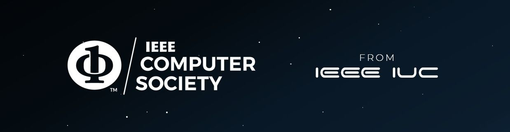

Giriş Yap veya Kayıt Ol
Kuluçka eğitimine ve IEEE IÜC'ye hoşgeldiniz.
Hakkımızda
Computer Society, IEEE İstanbul Üniversitesi-Cerrahpaşa’nın yazılım ve programlama alanlarındaki faaliyet, etkinlik ve projelerin gerçekleştirilmesinden sorumlu olan komitesidir. IEEE İstanbul Üniversitesi-Cerrahpaşa bünyesinde teknik projeler yaparak, yazılım alanında eğitimler düzenleyerek bilişim sektörü ile üyelerimizi bir araya getirmeyi hedefler. Komitemizin temel amacı yazılım alanında geliştirmeler yaparak kulübümüzün ihtiyaçlarına çözümler üretmek ve bu çözümleri üretirken de üyelerinin iş hayatında kullanılan teknolojilerle tanışmasını sağlayıp kendilerini geliştirmelerine fırsat oluşturmaktır.